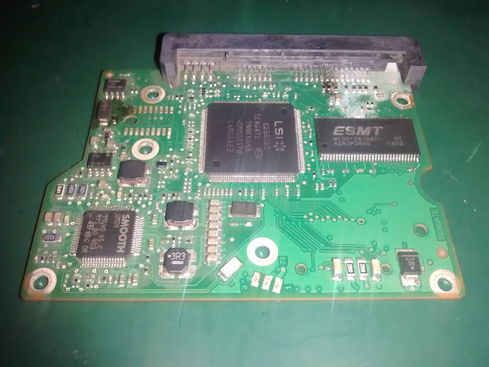
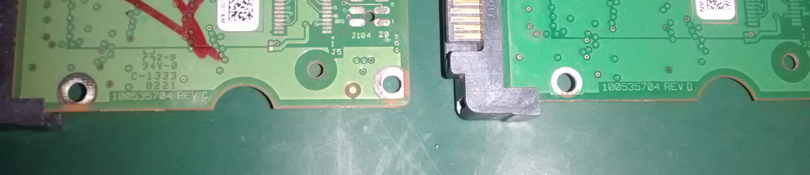
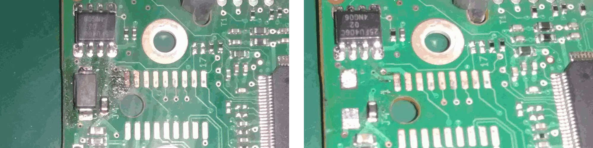
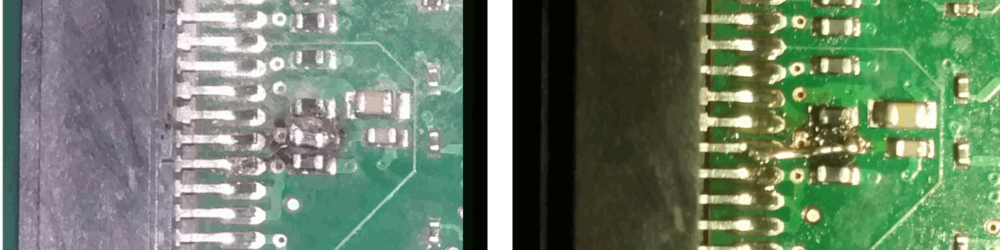
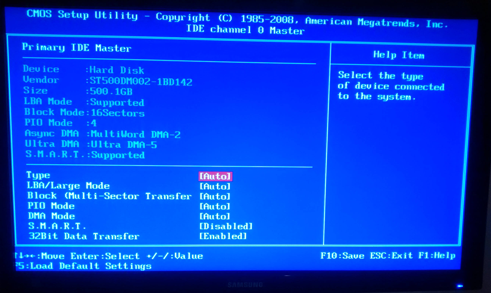

Intro
Circa ten years ago, before cloud was practically feasible this side of the sahara, a CPU was assembled for some SME with off the shelf parts featuring, three 500G hard drives:- 2 in raid 1 config, the last with OS ("the OS disk") to ran custom written software which stashed its inventory and transactions data into a MySQL DB.
Initially, the db data dirctory was stored on the mirrored raid pair but circa 4 years back, the OS got reinstalled and the dummy that did that (yours truly) forgot to set mysql's datadir on the mirrored disks.
Murphy's law fulfilled
The "OS disk" went kaput!
Finagle's law fulfilled
The "OS disk" went kaput 20 days before the owners were to file TAX returns. They needed the past year's data ASAP.
On inspection, I found that the OS disk was killed by a surge. The PCB had a charred TVS diode and what appear to be a charred inductors on the power supply side:-
 fig.1 Top left, burnt TVS diode, top right charred inductors. This clearly wasn't going to power on.
Somehow, after rummaging around, I managed to get a similar motherboard off a similar hard drive down to the model number but differing on Firmware and Board revision.(100535704 REV C and REV D for the donor and dead pcb respectively)
 fig.2 Left:- donor pcb, right:- dead pcb.
Recovery attempt numero uno
So with the HDD motherboard swapped, I plugged it in, turned power on and then:- black screen + blinking underscore. POST was struggling to figure out what the hell had been pluged into SATA1. There was also a repeated motif of clunking noise from the now powering on but malfunctioning hard drive. Multiple retries resulted in a hopeless feels,...but surrender wasn't an option.
Before throwing in the towel and taking it to data recovery specialists (and explaining why or who would pay circa 100,000 KES {1K USD at the time of this writing}), I thought it would be WISE to spend afew hours in data recovery RTFM.
Calibrative adaptive information
As far as recovery goes, Hard Drives fall into 3 categories:-
- Those recoverable from simple PCB swap,
- Those that need a BIOS transplanted,
- Those that have no separate transplantable BIOS. (bios info resides in MCU)
There is alot of literature on BIOSes and modern HDDs (google it or see google juice/references section at bottom) but the long and short of it is the HDD BIOS stores info that the hard drive's micro controller requires to read the System Area which inturn contains calibration and adaptive info unique to the mechanics of the drive. This includes manufacturing defect workarounds and servo specific params. This info is determined and set at the factory and is probably unique to virtually every modern hard drive that features a bios.
Without this, you may as well recycle the drive into a paperweight and make frizbees out of the platters.
Back to the three categories. By way of elimination, we already know category 1 is not applicable. The clunking noise was the MCU's quest for access to system area based on inaccurate BIOS data. Some also say this could have resulted in a corrupt System Area and irrecoverable data.
If it was to fall under category 3 (no transplantable BIOS chip data) there wasn't much I was going to be able to DIY and I would have to trod the 1K USD path.
Thankfully that wasn't the case as (after much RTFM) I was able to locate an 8-pin serial flash memory chip on the dead PCB.
Soldering Time!
So now, a sane trouble-free future lay in that tiny 8-pin ROM chip. The recommended way would be to transplant that chip to the donor board but that was not without risk. If during transplant, it gets more heat than the datasheet specs as its max or if a pin broke, then everything will have come to nothing!
So I decided to first focus on resurrecting the dead PCB and its less critical charred components then transplant the BIOS if that was to come to nought.
First up, the TVS diode or (Transient Voltage Suppression diode). As the name suggests, its purpose is to protect circuitry from voltage spikes and probably incurring damage in the process.
In our case, this TVS gave up the ghost so that the other components may live to facilitate recovery another day. Thank you dear diode, I will never forget this sacrifice. Anyhow, the solution here was to desolder that as it was shorted and diverting power supply from the rest of the components.  fig.3 The ressurecting PCB, Left:- Pre TVS diode, Right:- Post TVS diode. (notice the BIOS chip top left)
Then there was the charred inductors on the power supply side. There were suggestions on some forums that they could be simply bridged over Which sort of made sense and so I went ahead and purged the charred few and linked the respective PCB pads with a dab of solder so that current may flow into the board and power the rig.  fig.4 The ressurecting PCB Left:- burnt inductors, Right:- One purged and briged.
Lastly, I checked that both the 12V and 5V rails weren't shorted to ground and IMHO, the drive was good to go for power up!
RESULT! Recovery WIN!
The disk was reunited with the soldered up board and on power-on ALAS! - it spun up like it was new and the motherboard BIOS even picked it up:-
 fig 5. WIN!. If you went thru the same thing, this image would give you warm fuzzy feeling
But I wasn't out of the woods yet. There was the possibility that there could have been further damage and previous recovery methods could have corrupted the drive.
Thus In quick succession:-
- I rebooted into usb live linux key
- rsync-ed /var/lib/mysql out of that failing sucker with the quickness
- and verified that the that a mysql installation could make sense of the rescued datadir (which it was)
And RESULT! Disaster had been averted!
The end!
Outro
Always back up damnit!